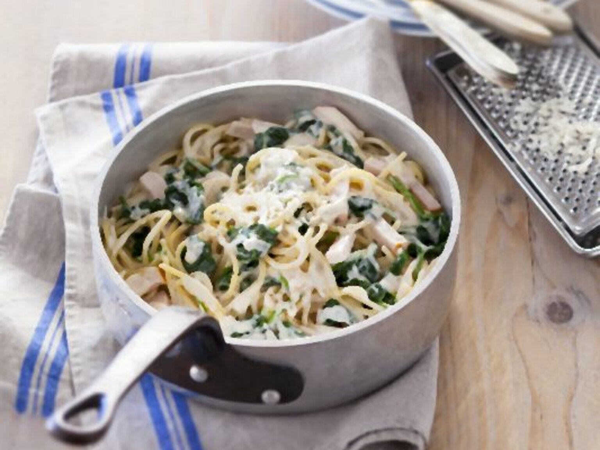

One Pot Pasta mit Hähnchen und Spinat

Beschreibung
Zutaten
für 4 Personen
- 2 Knoblauchzehen
- 250 g gefrorener Spinat
- 400 g Hähnchenbrustfilets
- 2 EL Pflanzenöl
- 750 ml Hühnerbrühe
- 150 ml Sahne
- 450 g Spaghetti
- 50 g Parmesan
Zubereitung
-
Den Knoblauch schälen und in feine Scheiben schneiden.
Den Spinat leich auftauen lassen.
Das Hähnchen abbrausen, trocken tupfen und in Streifen schneiden.
-
Hähnchen und Knoblauch zusammen in einem heißen Topf im Öl leicht goldbraun anbraten.
Die Brühe mit der Sahne angießen, die Spaghetti, Spinat, Salz, Pfeffer und Muskat untermengen und die Pasta unter gelegentlichem Rühren ca. 10 Minuten al dente kochen.
Nach Bedarf Brühe nachgießen.
-
Kurz vor dem Servieren den Parmesan untermischen und mit gewünschten Gewürzen abschmecken.